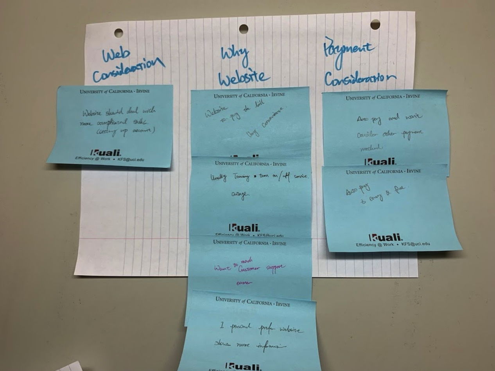

Overview
My SCE is a utility app for SoCal Edison. It is mainly used for managing SCE accounts, reporting and checking
power outages,
and finding information about SCE services and programs. My SCE is a fairly simple and straightforward app, and
therefore usable
by almost everyone. However, it has a very poorly designed user interface, which looks almost identical to SoCal
Edison’s website.
Outcome
In order to address the problem, we redesigned My SCE as a whole, and focused on its relationship with SCE's
website.
Competitive Analysis
If you want to get a lay of the land before you dive in, and the best way to do that is by looking around
and seeing who else is in the space with you.
---- Professor Bietz
Comparing and Contrasting Market Offerings
We examined four competitors - DWP Rates, SDG&E, SoCalGas, Cox Connect. The main service My SCE and other
offerings provide is a way for its customers to be able to pay their utility bills through mobile devices and
find information about what services are provided by their utility company.
A common set of functionality between the different electric utility apps includes:
1. Viewing / Paying bills
2. An outage map listing where planned and unplanned outages are
taking place
3. Reporting outages
4. A cCost calculator that adds up energy costs from appliance use or
overall energy use
My SCE provides all the information and features that you could find on their main website, while other apps
provide a more simplistic interface, which
provides a smaller set of information. The downside to this approach is that the interface mostly copies the
website’s layout, so looking through the information on the mobile app is cumbersome.
Since energy companies service a specific coverage area, the user base for each app corresponds to homeowners
and businesses found in those areas. Southern California Edison, whose app is the main interface we explored,
services electricity to much of Southern California. Other electricity utilities operate in locations where SCE
is not operating. Each utility company has a monopoly over their own area.
This
means that
even direct competitors don’t overlap in customers. That being said, the Southern
California Gas Company (SoCalGas), a gas utility company, offers its services to the same households and
businesses as SCE.
Strengthening its mobile platform is a way for SCE to make itself stand out from the others,
while providing modern solutions for its customers to manage their utility expenses.
User Research
Study Objectives
Considering the user base of SCE and its app, we want to feature understand the relationship between the mobile
app and uitlity services. Thus, we list out the following study Objectives.
1. How do mobile apps support a certain lifestyle?
2. Are there different expectations for what a mobile app should do versus what a website should do?
(features/characteristics people would like the app to prossess)
3. What role does technology play in bill paying and solving utility-related problems?
Research Method
To better understand our target user group, we use semi-structured interviews and a survey as
our methods
to acquire the data that we need. As a result, We have 10 interviewers and 42 survey
participants.
We asked questions relating to demographics, mobile app use, and bill payment strategies. The interview
subjects are selected from our friends who pay their own utility bills. Since one of our target population
groups is college students whose age in range of 18 to 22, our focus
would be on finding how they pay their bills as well as hearing their complaints on current payment method and
other problems that bothered them while using services.
Reaching out to our other target population, older homeowners, was more difficult to do.
Some of our members were able to rely on family members to participate in our interviews, but for the surveys
we didn’t have a
convenient communication channel to get as many participants as we would have hoped.
Ideate
After conducting interviews, I transcribed the interviews and created the Affinity Diagram that
contains
all
the pain points,
desires, and their past experiences of using utility apps.
This helped us to organize our thoughts and notes, also gave me the initial idea of redesign.

Target Population
Our main target populations are college students that rent an apartment or a room and working
homeowners.
College Students
For many college students, they are new to living on their own. The lack of experience in living on their
own means an unfamiliarity with paying bills.
Their concerns...
I want an easier way to pay bills, like Apple Pay
Wish I can deal all utility-related problems in one place
I would like to have an app that notifies my bills, usage, etc.
I would like an easier way to contact SCE to deal with outage
Homeowners
Homeowners generally in a higher economic class compared to renters or even younger homeowners. Concerning
older homeowner, some of the assumptions that we made when we first selected them as our target
population turned out to be incorrect.
We assumed that they would be less tech knowledgeable, which would affect their preferences in paying
their electric bill. This wasn’t the case,
as our interviewees and survey respondents stated that they were comfortable in using the web or mobile
apps in their daily lives.
Their preference towards the website in particular was
based on how conveniently using the interface fit in with their lifestyle rather being unable to
use the
mobile platform.
Their concerns...
Be able to qucikly access the bills and statement
If I could manage Auto Pay on phone that would be nice
Have online chat feature so I do not have to call them
Push me notifications when the bill is ready
Findings
According to our research on direct and indirect competitors, we have a thorough understanding of what My
SCE as an utility company’s app should focus on.
We did find out that some of our users are not comfortable with a subscription payment, and they
inevitably, at least sometimes, missed the payment due, which can lead to overdue penalization fee or even
utility shut downs.
In this circumstance, having a reminder feature is preferable for those people who always forget to
pay bill on time.
Another interesting finding is that, in younger male demographic group, interviewees and survey
takers would like to have the option to use modern online payment methods rather than credit cards.
They have listed Venmo, Apple Pay for preferred payment methods.
In addition, A common quality that both of our target populations wanted to see was an interface that was
both easy and convenient to use.
Students wanted to see a well-designed mobile app so that they could pay bills or deal
with emergencies since they’re always moving from one place to the next and won’t always have access to a
computer.
Older participants favored the use of a website precisely
because it fit in with how much time they spent at work or at home.
Usability Issues
Methods
We conducted usability tests and Cognitive Walkthrough to acquire the information that we need.
Usability Tests
For the usability tests, the participants were given five tasks to complete in My SCE application. The
participants of the usability tests were friends / classmates who had the time to assist us in our user
research.
Each usability test took about 20 minutes, accounting for both the usability test and the follow-up questions
and discussion.
Participants were asked to complete the following tasks while thinking aloud:
1. Pay electric bill for this month
2. Find customer service information
3. Check power outage in a certain area (via zip code)
4. Change first name
5. Report power outage for home or business
Cognitive Walkthrough
The cognitive walkthrough involved every member of the redesign team, each member an expert user of the app,
and sought to uncover usability issues in the UI. For the cognitive walkthrough, the redesign team analyzed
three key tasks to identify potential usability issues:
1. Change user’s first name
2. View payment history for the month of February 2018
3. Use search function to find bill statement
Findings
Signifier and affordance mismatch
In one of the tasks in the usability test, participants are asked to change the displayed name of the
electricity account. Through this task, we find some problems with the signifier for the account management
feature.
The correct signifier for Account Management is bound to the wrong affordance
(Account Services button), and the wrong/unclear signifier (Identity button) is bound to the
correct affordance.
False signifier
When users try to view the history of statements, the text “View Bill” is underlined and colored in green,
which makes it look like
clickable.
As we expect some kind of statement document to pop up, nothing happens when the fake hyperlink is
clicked.
It’s misleading, and violates
usability principles.
Fails to provide easy reversal of actions
Some of the pages are failed to provide a way to reverse actions.
For example, When filing outage report, users are presented with a 5-step process with no back/previous
button. If a user
made a mistake in a previous step, the only way to fix it is to click on ‘cancel’ and start over.
Bad interface layout
The mobile application has the identical interface as the website. This causes many basic functions,
such as
zooming and going back, fail to work on the app at all. In addition to that, some redundant designs results in
difficult to
access the basic features, and greatly
reduce the user experience as well.
Some interface components do not appear properly
This problem worsens users’ overall user experience with the app. There are
several places where the inconsistency appears.
Results do not meet the expectation
When users
have trouble finding a feature or doesn’t feel like navigating through the menu,
the search bar would be a very useful tool in finding the desired page within the app.
The reality of the current
search functionality, however, was far from that. When we typed in the keywords
of a feature we wanted to use, the app simply came up with a
internet-browser-like page with the results from a web search using the keywords
we supplied.